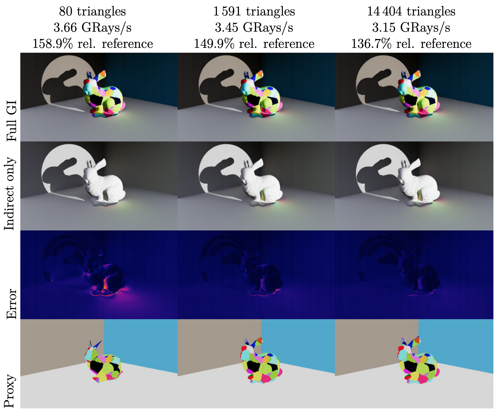

This is a short post about my master's thesis that I did during the spring of 2020. The actual report can be found in a link at the bottom of the page.
Diffuse global illumination is vital for photorealistic rendering, but accurately evaluating it is computationally expensive and usually involves ray tracing. Ray tracing has often been considered prohibitively expensive for real-time rendering, but with the new RTX technology it can be done many times faster than what was previously possible. While ray tracing is now faster, ray traced diffuse global illumination is still relatively slow on GPUs, and we see the potential of improving performance on the application-level.
We examine how well proxy geometry can work for RTX-based, ray traced diffuse global illumination, in terms of rendering time and visual error. Three different types of proxy geometry are tested—simplified triangle meshes, sphere sets, and voxel planes—to evaluate whether it is possible to get faster rendering without introducing significant visual error. We also identify a few requirements that such proxy geometry should fulfill.
We find that it is possible to achieve faster rendering times with relatively small errors using proxy geometry. While all proxy types demonstrate different performance and error characteristics, for all evaluated scenes we find that there is a simplified triangle mesh proxy with lower errors than all other types, which is also faster to render than the reference. This cannot be said for any of the other proxy types.
For people who are familiar with the theory, technology, and APIs, here is a quite direct and concrete explanation as to what exactly I did:
We make use of hybrid rendering or deferred ray tracing, meaning that rasterization is responsible for rendering "first hits" and filling out a G-Buffer with color, normal, and depth information; ray tracing is then used to trace the indirect diffuse rays from the G-Buffer. For every pixel in G-Buffer a single diffuse ray is traced, and a shadow ray is traced from the diffuse ray hit position. No further recursive rays are traced, meaning we only simulate a single bounce (this is not really a limitation but rather a simplification for this work.)
To make the diffuse ray tracing faster (the end-goal of this thesis) we apply a very simple modification to the pipeline: when tracing diffuse rays (and only in this case) proxy geometry is used in place of the original geometry, i.e. the geometry used to render to the G-Buffer. To actually make things faster, we must utilize a proxy geometry represetation that can be rendered very quickly using the RTX technology, and that can be represented in the APIs.
A few aspects have to be considered when generating proxy geometry. Most notably, we suggest that proxy geometry must be fully bounded by the original geometry. The reason for this is to avoid visual artifacts resulting from spurious hits, as discussed below. Simplified triangle meshes are evaluated—since the technology is especially optimized for triangles—but also non-triangle proxies are evaluated. Specifically, we have a (sparse grid of) voxel plane proxies (a single one-sided plane of a single color, bounded by a voxel) and a sphere set proxy (a set of spheres, each with a l-2 spherical harmonics color encoding).
The three different types of proxy geometry are generated in different ways. A voxel plane proxy is easy to generate: simply voxelize the original geometry and place a plane of a suitable normal & color behind all triangles intersecting the voxel. For the sphere set proxy, we use a modification of the algorith used in Variational Sphere set Approximation for Solid Objects. The modification is required to make sure that the proxy is bounded by the original geometry instead of bounding it. Finally, for the simplified triangle meshes we use the Bounding Mesh Algorithm, with the flipped constraint to get bounded meshes. Since the reference implementation does not support texture coordinates we add them back to the simplified geometry by projecting the original geometry UV-projection onto the proxy geometry using Blender. An intersection shader and hit group was defined for each of the two non-triangle proxy geometry types. The shader implementations are very straightforward and are provided as GLSL source.
I will keep this section very light; there is obviously much more to be said, but I have already said a lot of those things in my report! But in any case, here is a small showcase of the results from my work.
This figure, while not a very fair comparison, shows what type of results you can expect from the different proxy types, and what they look like. The performance characteristics of the proxy types also reveal themself quite clearly, already in this very simple scene. Voxel planes are very slow in my implementation. The main reason for this is the fact that we need to submit a complete AABB per voxel plane to the intersection shader, in addition to the ones part of the bottom-level acceleration structure, which isn't accessible from the shader interface. While the sphere set is faster than the voxel planes, simplified triangle meshes are clearly superior, even when the difference in number of primitives is large. This is even more clear in the next figure.
For this figure I attempted to balance the error (by eye) between the three types, so the relative performances should be more suitable for direct comparison. Here we can once again see that simplified triangle meshes are superior to the other types. Considering what the RTX technology actually consists of this is not a massive surprise, but even with that in mind profiling data from Nsight suggest that there is even more going on behind the scenes than what the publicly presented information can explain. For example, we can see how much time is spent waiting for memory in the pipeline, and that a triangle mesh of many MB stalls the pipeline way less than a similar non-triangle geometry of only a few hundred bytes. This suggests to me that there might be some geometry cache that only works for triangle geometry. While the existance of such a thing is not suprising, my work is the first evidence of this that I've seen.
 Since triangles clearly are superior, here is a figure which shows the error and performance for three levels of triangle mesh simplification (original geometry has 144 046 triangles). We can see that decreasing the number of triangles can greatly improve the rendering performance, while barely affecting the visual error. All of this is of course dependent on the number on primitives in the original geometry (see the graph below), the number of objects in the scene, and a set of other aspects, but in any case I think it shows the potential value of a technique such as the one proposed in this work.
Finally, note that for all figures the error is mostly present in places where you would expect darkening, e.g., in concave regions. These features are naturally something that the lower resolution proxy geometry often fails to capture. While not perfect, this error can to some extent be mitigated using separate ambient occlusion, such as screen space ambient occlusion (SSAO) or really any other type of ambient occlusion.
Around the time I finished my thesis Nvidia wrote about a somewhat similar idea on their developer blog: Implementing Stochastic Levels of Detail with Microsoft DirectX Raytracing. While both our works deals with the idea of using low-resolution geometry for RTX-based ray tracing, their work is not focused on any specific usage (such as diffuse global illumination). Because of my focus I believe we get quite different conclusions out of it, so I will discuss the two main differences I have identified here.
Firstly, they describe that ray tracing is a O(log n) operation so decreasing the number of primitives (n) should not lead to a massive change in rendering time. This is of course true even for my work, but for diffuse rays (i.e., rays of low coherency) the curve is much more steep and we can expect greater improvements, as seen in the following figure from my thesis:
The alpha-parameter can roughly be described as material roughness or inverse ray coherency. See Section 5.3 of my thesis report for more information.
Secondly, they write:
Any secondary ray starting from a primary hit must “see” the same LODs for objects as the primary ray (or rasterizer) did. Failure to guarantee this means that secondary rays might miss intersections or find spurious hits due to the mismatch in scene representations between the primary and secondary rays [...]
In my work I identified the same problem with the spurious hits, but came to a different conclusion. In my work I render the first hit (using rasterization) with full resolution (original) geometry, while the diffuse global illumination is ray traced against low-resolution (proxy) geometry. While NVIDIA's statement is correct, it is not a dealbreaker, since it can be mitigated. In my case all proxy geometry is fully bounded by the original geometry, which means we will not get any spurious hits. The cost of this is an increase in missed rays which results in an underestimated amount of ambient occlusion. This underestimation of ambient occlusion is not unproblematic, but it can be resolved more easily than the artifacts we get otherwise. See Section 4.1 of the thesis report for more information.
This was a short post about my master's thesis! If you are still curious about the work I would recommend you to read the actual report. A compressed low-resolution PDF can be downloaded here:
Thesis report, low-resolution (3.5 MB)
The high-resolution file is too big to upload to my GitHub pages (i.e., this website), but once the thesis is officially published and uploaded in a digital database I will add a link to that one as well.
All source code is available and is open source under an MIT License. However, be warned that the code is not always the prettiest since I haven't really prepared the code for public scrutiny. It's linked here purely for transparency and reproducibility.
The proxy geometry generation (C++)
If you have any questions, feel free to contact me on Twitter @SimonMoos or send me an email at simon.moos95@gmail.com.